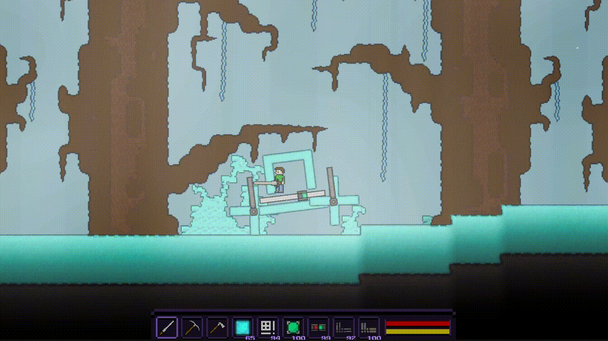

Perastra is a 2d side-scroller pixelated sandbox action-adventure game that I have been working on for over 3 years now, and I have improved a lot from the challenges and systems I've created for it. The main gameplay focus is to use your creativity to come up with solutions to fight enemies and bosses, explore an alien planet, discover new resources and abilities, upgrade your weapons, maximize efficiency, and conquer whatever other challenge you may find along the way. I'm still working on this game, I haven't released it to the public, but I've managed to make tons of complex systems for it that I think shows my capability of both making ideas that can make a game stand out, and the capability to think on a larger scale than just a single system to create a larger project. This game has a few aspects to it that I've never seen in any other game that can really make this stand out in the sea of repeated indie game ideas.

A very important part of this game is the mechanical system. The mechanical system includes placeable objects like pistons, motors, cables, switches, and computers, and also includes an ability to place a block off of the world grid as an entity, allowing you to make things like cars and airplanes. This will also allow the player to create factories to automate the production of certain resources. I would compare this heavily to the building system in Scrap Mechanic, if you've played it before. Now alone, this isn't that crazy, other games have done things like this before (although I don't think I've ever seen it in conjunction with a Terraria-like progression), but where it gets interesting is where it combines with the brain system.The brain system is what really separates this game from others. The brain system is a neural network heavily inspired by the functions of the brains of real animals. It uses things hormones like, dopamine, adrenaline, and cortisol, and is structured in a way similar to real brains, all while making sure it's performant enough to run on most computers. I am able to apply this brain system to any creature in the world, allowing it to actually adapt and learn to whatever situation it encounters. This makes fighting enemies way different than in any other game. In other games, you have to predict what the enemy will do next, while in this game, you have to know the limitations of the enemy and perform actions in a way that ensures whatever action the enemy does in it's physically limitations, it can't hit you. It will be very unique; it will almost be like all the enemies are being controlled by real people playing against you. In the mechanical system, there will also be a neural computer block that allows you to implement this system into any machine you create, meaning you could possibly make a car, then have a robot-controlled turret on top that is trained to aim at any enemy it sees. This will be pretty simple to implement as the brain system only takes in and returns numbers ranging from 0 to 1, which is the exact same range the signals in the mechanical system supports. This brain system is not fully done yet, however it does currently work, there are just some modifications I would like to make as a while back I learnt how reasoning and internal thoughts work and how to implement that into my system.